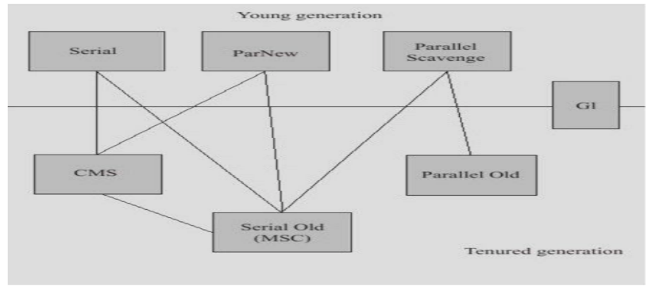

垃圾收集器
收集算法是内存回收的理论，垃圾收集器是内存回收的具体实现。

parallel[ˈpærəlel] 并行的
serial[ˈsɪəriəl] 顺序的，串行的
scavenge[ˈskævɪndʒ] 觅食、捡破烂
tenured[ˈtenjəd] 终身的长期的
CMS，Concurrent Mark Sweep，sweep[swiːp]扫、打扫、清扫，Concurrent并发
并行（Parallel）：指多条垃圾收集线程并行工作，但此时用户线程仍处理等待状态
并发（Concurrent）：用户线程和垃圾收集线程同时执行，在单CPU上可能是交替执行，在多CPU上可能是并行的在不同CPU上执行
到目前为止还没有最好的收集器出现，更加没有万能的收集器，只是选择对具体应用最合适的收集器。
| 新生代 | 老年代 | JVM参数 |
|---|---|---|
| Serial (DefNew) | Serial Old(PSOldGen) | -XX:+UseSerialGC |
| Parallel Scavenge (PSYoungGen) | Serial Old(PSOldGen) | -XX:+UseParallelGC |
| Parallel Scavenge (PSYoungGen) | Parallel Old (ParOldGen) | -XX:+UseParallelOldGC |
| ParNew (ParNew) | Serial Old(PSOldGen) | -XX:-UseParNewGC |
| ParNew (ParNew) | CMS+Serial Old(PSOldGen) | -XX:+UseConcMarkSweepGC |
| G1 | G1 | -XX:+UseG1GC |
JDK 1.7/1.8默认收集器：-XX:+UseParallelOldGC， Parallel Scavenge (PSYoungGen) + Parallel Old (ParOldGen)
JDK1.9开始默认收集器为：G1